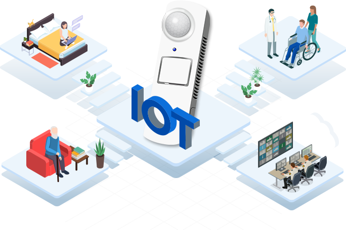
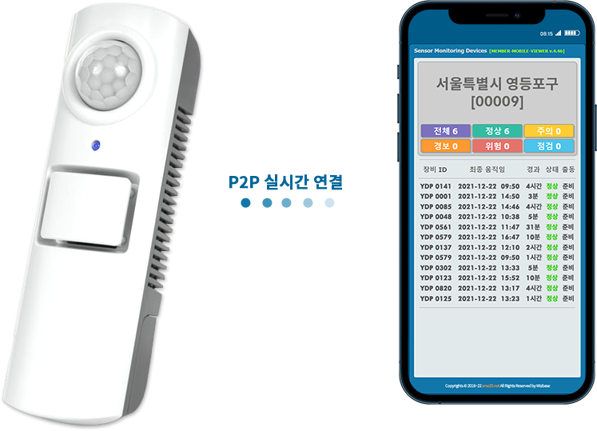
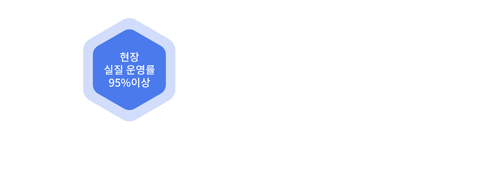
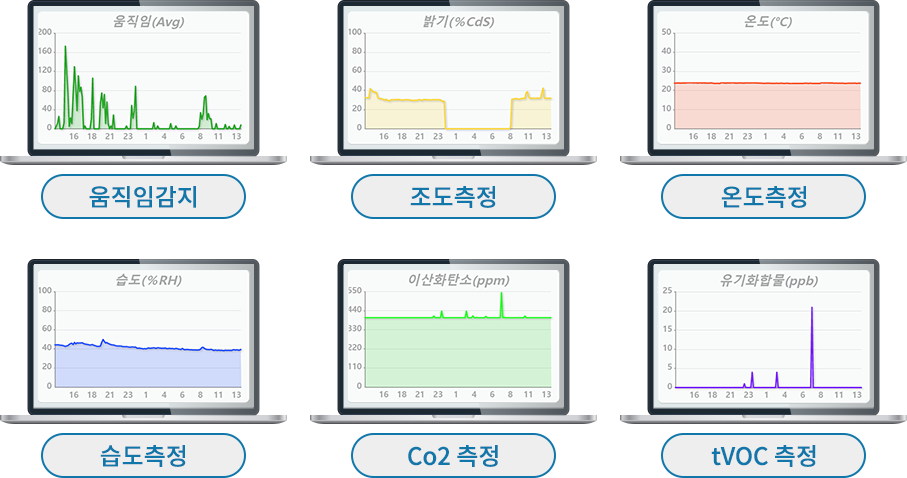
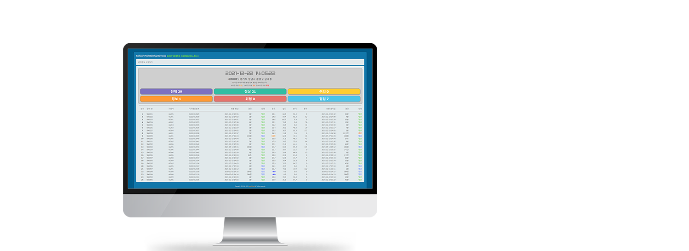
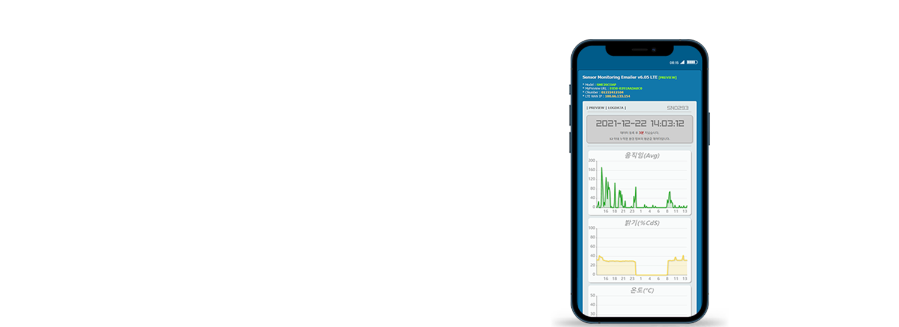

ABOUT OUR SERVICE
1인가구 안전돌봄 IoT 서비스란?
IoT를 활용한 돌봄서비스로 대상자의 건강·안전관리를 위해
움직임 감지 및 댁내의 온도, 습도, 조도, CO2(화재), tVOC(냄새)를
실시간 측정하여 돌봄서비스 활용 및 고독사 예방 솔루션입니다.

ABOUT OUR SERVICE
프라이버시 침해 없이 돌봄현장에 필요한 정보만 담은 안전돌봄 IoT
● 카메라, 음성 녹음을 하지 않아 사생활 침해 요소를 제거
● 생활환경데이터를 통한 모니터링 방식
● 기기의 전원 연결만으로 모든 설치를 완료하여 실시간 모니터링 가능
● 손바닥만한 사이즈로 댁내에 설치해도 일상생활에 방해되지 않는 크기
ACHIEVEMENTS
B2G시장을 주력으로 레퍼런스를 확대해가고 있습니다

ABOUT OUR SERVICE
오탐지, 오작동 없는 6가지 생활환경 데이터로
오탐지, 오작동 없는 6가지 생활환경 데이터로
실시간 대상자 안부 확인
대상자의 안위 확인에 필수적인 '움직임'과, 생활환경 이해에 중요한 '온도, 습도, 조도, CO2, tVOC'를 지속적으로 정확하게 기록하여 돌봄서비스에 즉각 활용할 수 있는 효율적인 돌봄서비스 구축, 일상생활패턴(ADL)까지 확보하여 돌봄 예측서비스를 제공


ABOUT OUR SERVICE
모든 돌봄서비스 관계자가 편리한
모든 돌봄서비스 관계자가 편리한
안전돌봄 모니터링 플랫폼
IoT기기 전원 연결만으로 설치를 완료하는 안전돌봄IoT는 언제든 실시간 모니터링이 가능하며, APP 설치를 하지 않는 링크 공유 방식으로 편리하고 효율적인 모니터링 플랫폼을 제공